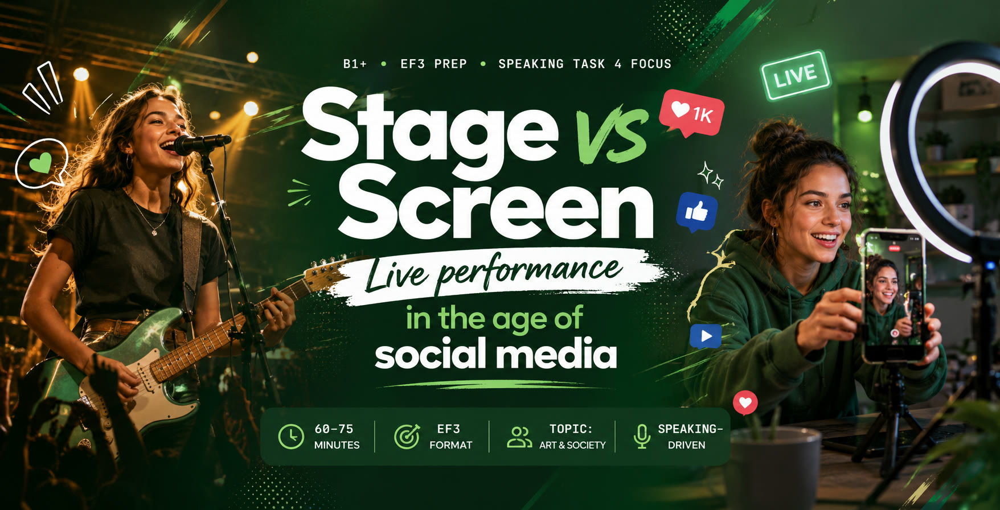

💡 Use full sentences with «I think…», «In my opinion…», «Personally, I…» — the same registers you need for Task 3 & 4.
First — read & flip — make sure you can use each word in a sentence:
1. Many young dancers followers by posting short rehearsal clips.
2. It takes years to build a loyal in the offline world.
3. Live performers often have to deal with right before the show.
4. Some artists refuse to the mainstream to stay authentic.
5. The most viral clips on TikTok often come from the most creators.
6. After ten years of , the choreographer was ready to launch her own production.
7. Critics praised her for her — she stayed true to her style despite the trends.
8. A unique signature helps a young dancer stand from the crowd at any audition.
9. Smart content creators understand that matters more than follower count.
10. After her final solo, she received a standing from the audience.
Right form = right ending. Watch for: spelling (simple → simplicity, NOT simplisity), part of speech (noun? adjective? verb?), positive/negative prefix (un-, dis-, im-, in-, ir-). 6 баллов на экзамене — каждое слово 1 балл, ошибка в орфографии = 0.
Ten years ago, a serious dancer's path was clear: years of rehearsal, ruthless auditions, and a hope that one day you'd see your name on an opening-night programme. Today, that path is no longer the only one — and for many teenagers, it isn't even the obvious one.
Sixteen-year-old Lera from Saint Petersburg has never been to a casting call. Yet, her short clips of contemporary choreography have been watched over three million times. «I post once a week,» she says, «but I rehearse every day. The difference is — my audience is the phone, not the theatre.»
Critics worry that this shift produces a generation of dancers who can deliver a brilliant fifteen-second hook but can't sustain a full ninety-minute performance. Defenders reply that visibility is what matters — and a smartphone gives more visibility in a month than a regional theatre could give in a decade.
Lera herself is more cautious. «If I had to choose one thing forever, I'd choose the stage. Online, you go viral and you're forgotten in a week. On stage, people remember you for years.» She pauses. «But for now — I take both.»
Wish + Past Simple — for a present regret. «I wish I had more time to rehearse.»
Wish + Past Perfect — for a past regret. «I wish I had auditioned last year.»
2nd Conditional — present unreal. «If she were more confident, she'd post more.»
3rd Conditional — past unreal. «If I had uploaded earlier, it would have gone viral.»
1. I wish I more rehearsal time before opening night. (present regret · have)
2. If she a little more confident on stage, she a lot more followers. (present unreal · be / gain)
3. I wish I that performance video sooner — now everyone has moved on. (past regret · upload)
4. If I for the school musical, I would never have discovered my passion. (past unreal · not audition)
5. He wishes he perform in front of a real audience instead of a phone camera. (wish + could · ability)
6. If they her earlier, she it to the national stage by now. (3rd cond · support / make)
7. If only I so nervous before going live — it ruins my voice. (if only · be · negative)
8. I wish my parents how much dance matters to me. (present regret · understand)
Project topic: "Live performance vs. social media: how do young artists today choose where to share their talent?"
You've found these two photos for the project. Imagine you're recording a voice message to your project partner.
Tap Start recording and answer the project task aloud. As you speak, the system checks the criteria the examiner is checking — in real time. Re-record as many times as you want. Nothing leaves your browser.
Each row shows the phrasal verb, its meaning, and an example. Tap any word to hear it.
Use the correct form (tense, person). One per sentence.